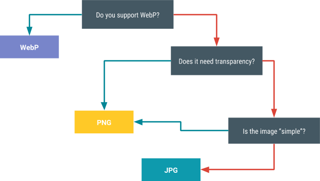
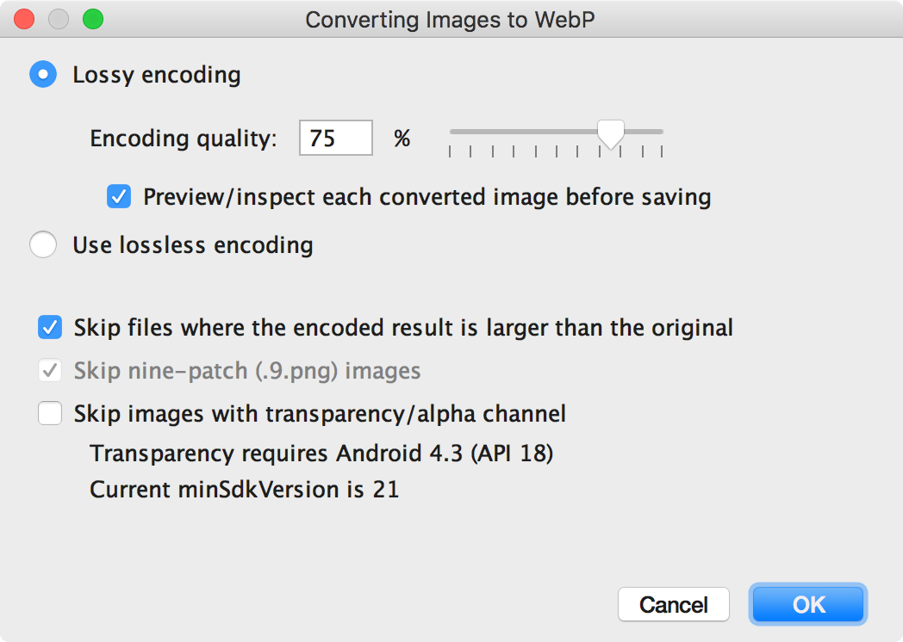
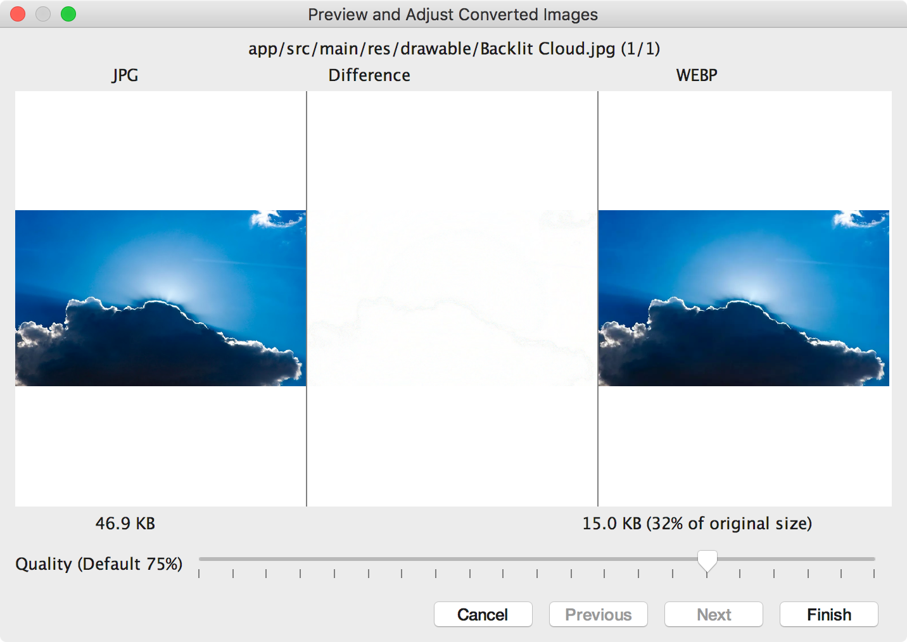
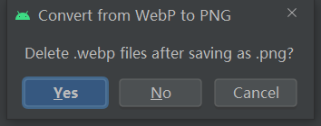

Andoid图片格式选择
1、结论：
参考下图理解，先说结论：优先使用 SVG,搭配支持库使用可兼容至Android 7； 对于细节比较多，不适用 SVG 格式的图片（例如：应用启动图标 和 开屏页 背景图），优先使用 WebP（Android>=14,支持有损压缩。Android>=18,支持无损且透明的图片）； 如果Android版本较低，不支持WebP，对于图片比较简单且不需要支持透明通道的图片使用JPG，其他情况下选择PNG。

举个栗子：我们公司的项目 minSdkVersion 为 19，搭配支持库使用，完全兼容SVG 和 WebP格式。所以，最优选择是：SVG + 少量WebP。
2、图片格式：
APP开发中使用到图片格式一般不会超过下面几种：（Shape和点9图不在本博客的讨论范围，有兴趣的读者，请自行学习）
- JPEG(也叫jpg)：有损压缩，不支持透明通道
- PNG：支持无损压缩和透明通道
- Gif：动图，无损压缩，因其体积小而成像相对清晰，因此使用广泛
- WebP：Google开发的一种图片格式，压缩效果优于JPG和PNG。Android>=14,支持有损压缩。Android>=18,支持无损且透明的图片。
- SVG： 基于可扩展标记语言（XML），用于描述二维矢量图形的图形格式。SVG由W3C制定，是一个开放标准。——维基百科。
3、SVG简介
Android > 20 支持矢量图形。使用 Support 或 AndroidX 支持库。可以兼容至Android 7。
优点：缩放自由且不会降低图片质量，完美适配于任何分辨率的屏幕；用xml描述，文件小。
缺点：初次加载矢量图会耗费更多 CPU 周期，之后，和PNG图片的内存用量和性能相当。
SVG不适合包含很多细节的图片，例如：启动图标,对于这些图标推荐使用WebP格式。 google建议矢量图片限制为最大 200 x 200 dp，否则，绘制所需的时间可能会太长。
4、将图片转换为 WebP 格式
Android studio 可以将PNG、JPG图片装换为WebP格式。您可以装换单张图片，也可以装换包含多张图片的文件夹。具体步骤如下：
- 右键点击图片或文件夹，然后选择 Conver to WebP。
- Converting Images to WebP 对话框随即打开。默认设置取决于当前模块的 minSdkVersion 设置。 
-
Lossy encoding 有损压缩，下面的可以75%代表压缩质量，并选择是否在保存之前查看每张转换后图片的预览效果。
Use lossless encoding 无损压缩，minSdkVersion >=18 时可用。
Skip files where the encoded result is large than the original 选中会跳过编码后文件大小 > 原始文件的大小的 所有文件。
Skip nine-path(.9.png) images 点9图无法转换为WebP图片，Android studio 自动跳过点9图。
Skip images with transparency/alpha channel 跳过带有透明通道的图片。由于 Android Studio 仅允许您在 minSdkVersion >= 18 时创建透明的 WebP 图片，因此，如果 minSdkVersion 低于 18，系统会自动选中。
-
点击OK开始装换，如果选择的是有损装换，并且选择了预览转换效果。那么 Android Studio 会在转换过程中显示每张图片，以便您检查转换结果。
（如果您未选择查看预览，Android Studio 会跳过此步骤，并立即转换图片。）在预览步骤中，您可以单独调整每张图片的质量设置，如下图。

为您查看的每张图片选择一个质量设置。如果您要转换多张图片，请点击 Next 跳转到下一张图片。
- 点击 Finish。图片会在原始位置进行转换。
5、将 WebP 图片转换为 PNG 格式
- 在 Android Studio 中右键点击相应 WebP 图片，然后点击 Convert to PNG
- 系统会显示一个对话框，询问您是要将该图片转换为 PNG 格式、删除原始 WebP 文件，还是保留原始 WebP 文件以及新的 PNG 文件。要删除原始 WebP 文件，请点击 Yes；要保留 WebP 文件以及 PNG 文件，请点击 No。图片会立即转换。 